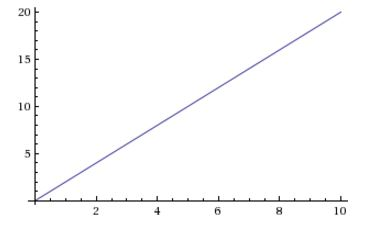
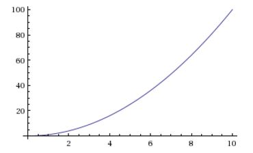

Revision of maths we've done previously. This page will be subject to frequent addition and error correction!
Can you recall what a simple line graph is like? This is where y = 2x, so for each step forwards, you climb 2 steps up.

Calculus is partly about what happens when how far you climb up for each step keeps changing. So, $$y=x^2$$

Can you remember what this is?
$$f(x)= nK^{n-1} $$
It's the power rule from differential calculus. We are saying if our function is $$6x^4$$ then n = 4 and the ratio of the rate of change at any point is: $$f(x)=24x^{3}$$ So if you pick a point on a graph, say x = 2, the ratio of rate of change at this precise point is $$48^3$$